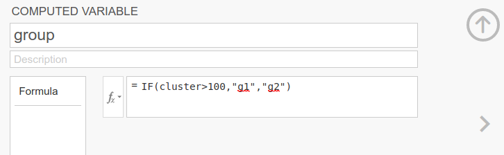
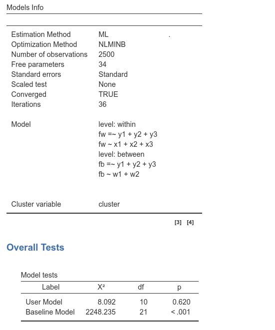
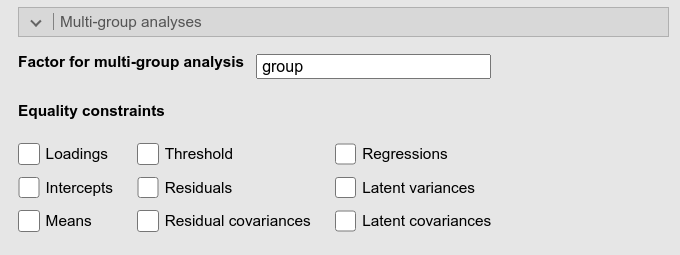
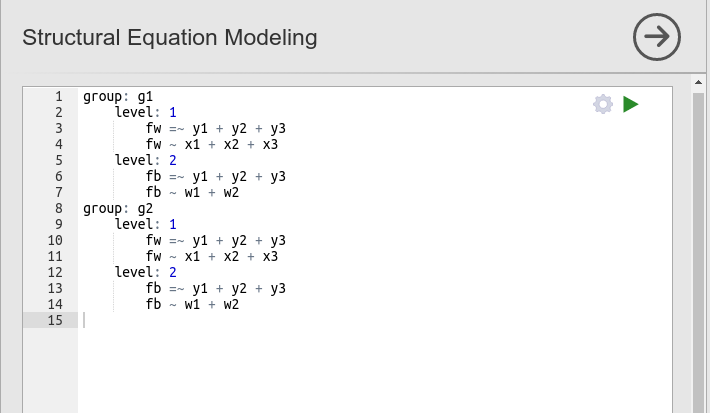
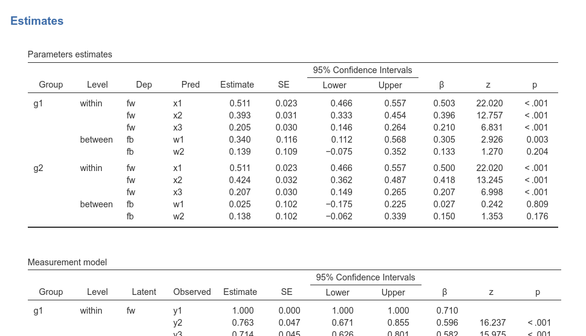
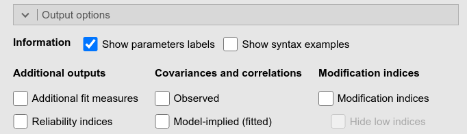
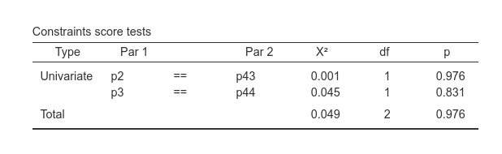
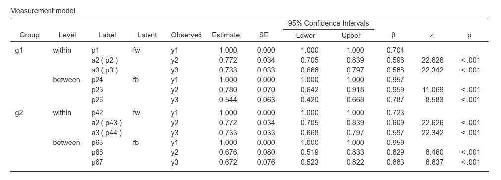

Multigroup multilevel models
keywords SEM, multilevel, multigroup, lavaan, SEMLj, jamovi
0.8.0
Draft version, mistakes may be around
In this example we show how to estimate a multilevel, multigroup path analysis using SEMLj.
We show input of SEMLj syntax sub-module, because multilevel models can be run in SEMLj only in the syntax sub-module.
Much of the output that SEMLj produces is labeled as it is in lavaan R package output, so lots of information can be found in lavaan help and tutorials.
Obviously, one can run the models discussed here directly in R using
lavaan package, if jamovi
is not the software one is using at the moment.
The data
For this example we are going to use the Demo.twolevel
dataset present in lavaan R package, which is useful for
estimating a multilevel model, with a small modification. The dataset
contains 200 clusters, within each 6 items (y1-y2) and 3 continuous
variables (x1-x3) are measured. Across clusters (between level) two
covariates (w1 and w2) are measured .
We now imagine that the 200 clusters are evenly divided in two
groups, g1 and g2. Had this dataset been based
on a survey in 200 school classes, for instance, one can imagine that
100 classes came from one state (g1) and the other 100 from
another state. We created the group variable on the spot
for the sake of this exercise.

We want to estimate the multilevel model (cf lavaan help page), in the whole sample, then separated for the two groups, and test some differences in parameters between the two groups.
The model (whole sample)
The model has a latent variable measured within clusters
(fw) with 3 items y1,y2,y3. At the
within-cluster level, the latent variable is predicted by the three
covariates x1, x2 and x3.
At the between-cluster level, the same latent variable is present
measured with the same items (fb=y1+y2+y3), but it is
predicted by the two between-cluster covariates (w1 and
w2). Here is the model for the whole sample.
Output
As soon as we set the input, we obtain the whole set of results tables. We do not go through the results now, because this is not the model we are focusing on, but we need to be sure that the estimation converges in the whole sample, so we are ready for the multigroup analysis. In fact, if the model does not converge in the whole sample, it is difficult to make it converge in multigroup analysis.

Multigroup model
We now set the multigroup analysis on top of the multilevel model.
The model syntax needs to be repeated for the two groups explicitly.
Important point: whereas standard multigroup analysis
only requires to define a grouping variable in the
Multi-group analysis panel, here we need to specify a
grouping variable in the Multigroup analysis panel and the
grouping structure in the syntax.
There you go: First, we set the multigroup variable

and then we issue the following syntax:
group: g1
level: within
fw =~ y1 + y2 + y3
fw ~ x1 + x2 + x3
level: between
fb =~ y1 + y2 + y3
fb ~ w1 + w2
group: g2
level: within
fw =~ y1 + y2 + y3
fw ~ x1 + x2 + x3
level: between
fb =~ y1 + y2 + y3
fb ~ w1 + w2
At this point, we have all our estimated parameters, for the within and the between level, divided by group.

If the model works, we can start testing equality constraints across groups. However, for this particular model, the Equality constraints options in the input panel cannot be used to quickly set the constraints. We need to use the syntax. But before, let’s ask for the parameter labels, so we can identify parameters in the output.

Constraints across groups
Assume we want to test that measurement model at the within level is
the same across groups. So we want to test that
fw =~ y1 + y2 + y3 is equivalent across groups. We need to
set this syntax (notice the labels a2 and
a3):
group: g1
level: within
fw =~ y1 + a2*y2 + a3*y3
fw ~ x1 + x2 + x3
level: between
fb =~ y1 + y2 + y3
fb ~ w1 + w2
group: g2
level: within
fw =~ y1 + a2*y2 + a3*y3
fw ~ x1 + x2 + x3
level: between
fb =~ y1 + y2 + y3
fb ~ w1 + w2By setting the same coefficients across groups
(a2,a3), we set the parameters as constrained
to be equal across groups. We do not need to fix y1 because
it is already fixed to 1 to give the latent variable a scale.
Passing this syntax produces in the output the tests for these constraints.

To clearly understand what is going on, please check the parameter labels in the tables.

The loading fw->y2 has a label a2 (p2) for group 1
and a2 (p43) for group 2. This means that the user declared
the label a1 for both, and each is uniquely referred to as
p2 for group 1 and p43 for group 2. The same
goes for a3.
Now, in the constraints tests table, we see the test for the equality
of a2, because the test is comparing p2 vs
p43, and for a3, because the test is comparing
p3 with p44. We also get the overall test
Total.
With this method, we can test any constraint we wish.
Examples
Some worked out practical examples can be found here
Comments?
Got comments, issues or spotted a bug? Please open an issue on SEMLj at github or send me an email